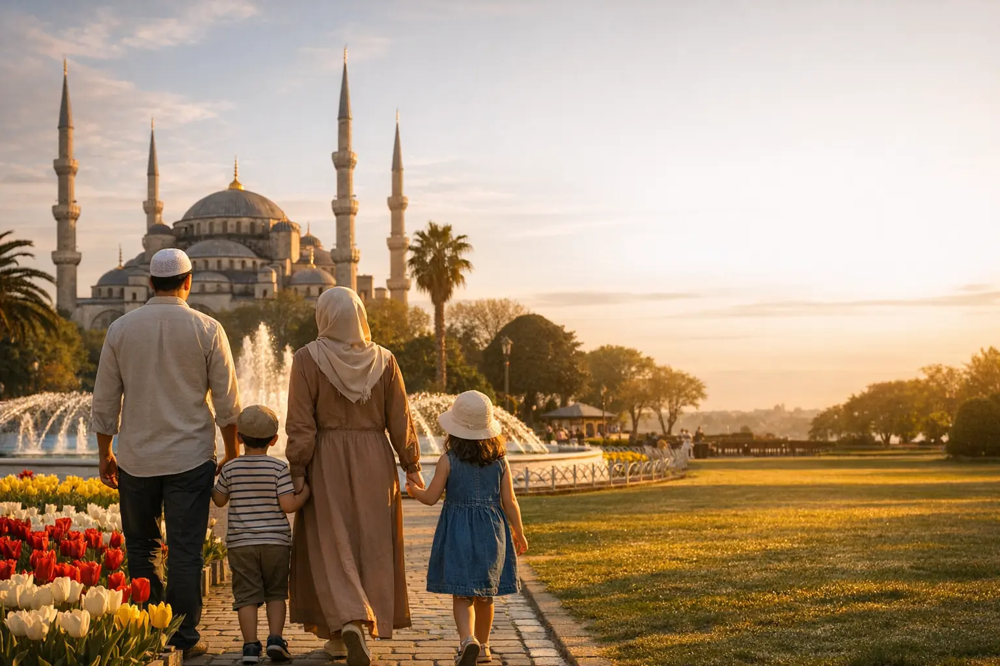
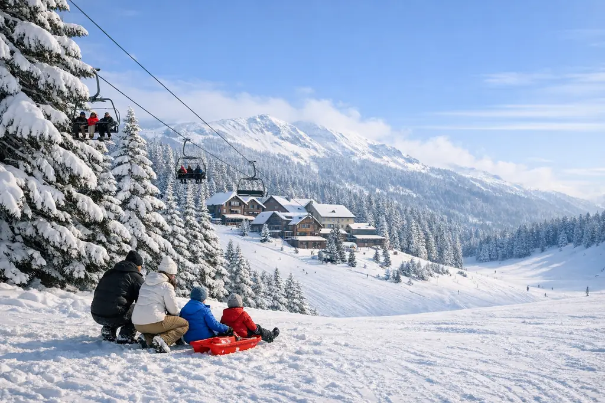
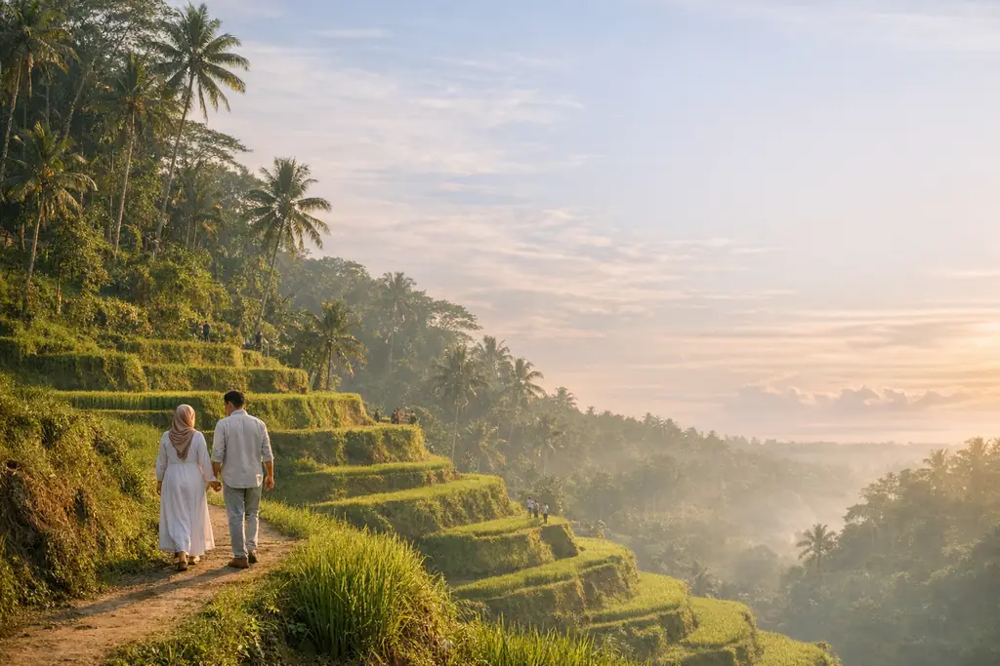
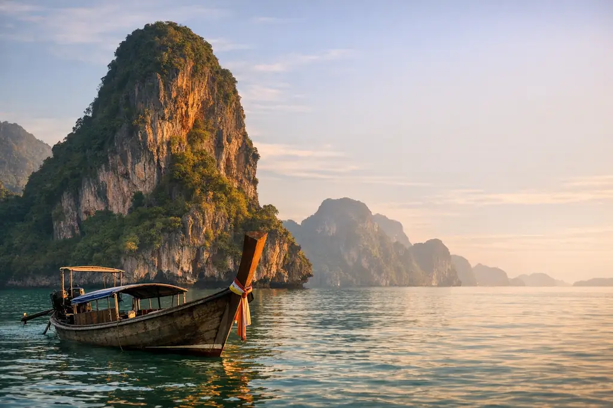
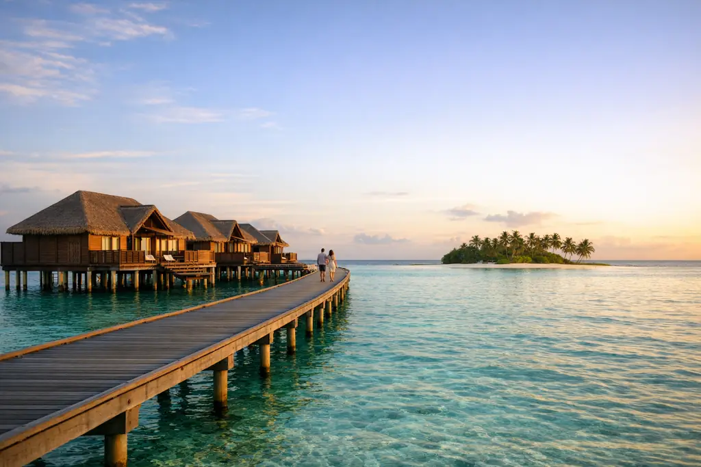
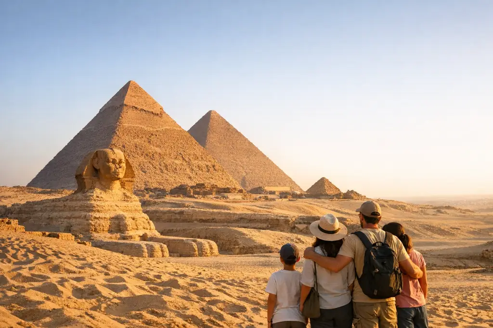
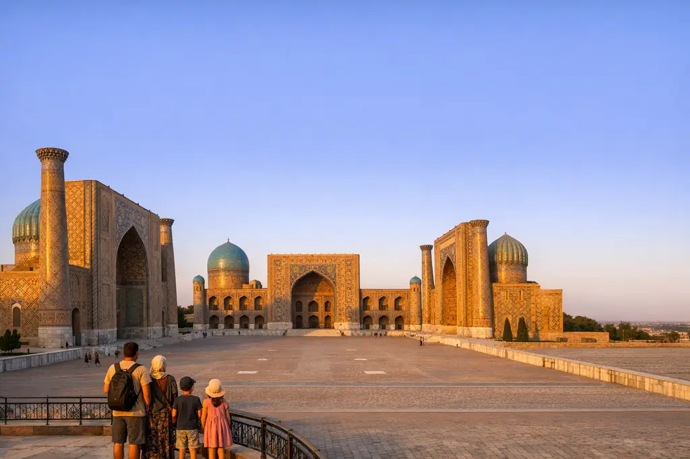

İstanbul 5 Günlük Program
İstanbul'da dengeli beş gün: Tarihî Yarımada, iki kıta arasındaki Boğaz ve Sapanca Gölü ile Maşukiye'ye günübirlik gezi; seçilmiş bir otel ve özel şoförle.
FiyatSezona göre değişir — teklifinizi isteyin

Tur Programları
Türkiye'de ve yurt dışında her zevke uygun, özenle hazırlanmış programlar: aile, balayı, doğa, şehir, kış ve lüks. Hepsi kişiselleştirilebilir.
Seyahat Bulucu
4 kısa soruyu yanıtlayın, 22 program arasından size en uygun olanları 20 saniyede önerelim.
Aileler ve balayı çiftleri için Türkiye paketleri veya Türkiye fırsatları mı arıyorsunuz? Burada Türkiye'de ve yurt dışında gün gün planlanmış 22 program var; her program kişiselleştirilebilir: şehirler, gün sayısı ve otel seviyesi.
Ne aradığınızı bize söyleyin, size özel bir program tasarlayalım.
Kişiye özel program isteyinİstanbul'da dengeli beş gün: Tarihî Yarımada, iki kıta arasındaki Boğaz ve Sapanca Gölü ile Maşukiye'ye günübirlik gezi; seçilmiş bir otel ve özel şoförle.

Otel değiştirmeden Türkiye'de tam bir hafta: İstanbul'da konaklayıp Sapanca ve Maşukiye'ye, Bursa ve Uludağ'a, Adalar'a günübirlik gezilere çıkarsınız; özel araç ve özel şoförle.

İstanbul'un büyüsünü Bursa'nın sakinliğiyle buluşturan bir hafta: Tarihî Yarımada ve Boğaz, ardından Bursa'da iki gece, Uludağ teleferiği ve ilk Osmanlı camileri.

Tek yolculukta üç destinasyon: İstanbul'un simgeleri, ardından Sapanca Gölü ile Maşukiye ormanları arasında iki gece ve Uludağ'lı Bursa'da bir gece.

Karadeniz Bölgesi'nde bir hafta: Uzungöl'de iki gece, dağların arasında Ayder'de bir gece, Sümela Manastırı ve Trabzon şehri; özel şoförle.

Karadeniz kıyısı ve yaylaları arasında on gün: Trabzon, Uzungöl, Sultan Murat, Ayder ve Rize, Sümela Manastırı ve Karaca Mağarası; rahat bir tempoda.

Türkiye'nin en çok tercih edilen iki destinasyonunu birleştirir: İstanbul'un simgeleri ve Boğaz, ardından Trabzon, Uzungöl Gölü, Ayder ve Sümela Manastırı; iç hat uçuşlarıyla.

Sakin tempolu bir aile gezisi: İstanbul'un simgeleri ve çocuklara uygun mekânlar, Sapanca'da bungalovda iki gece, ardından göller ve at çiftlikleri arasında Trabzon ve Uzungöl.

Yeni evliler için dokuz gün: Boğaz'da romantik İstanbul, Kapadokya'da mağara otelde iki gece (balon seçeneğiyle) ve Sapanca'da özel bungalovda iki gece.

Kapadokya'da üç gün: mağara otelde iki gece, isteğe bağlı gün doğumu balonu, Kırmızı ve Yeşil turlar; İstanbul'dan gidiş-dönüş iç hat uçuşlarıyla.

Türk Rivierası'nda bir hafta: deniz kıyısında bir tatil köyü, Kaleiçi ve Düden Şelaleleri, Olympos teleferiği, Side ve Manavgat ile Alanya Kalesi.

Türkiye'nin tamamını görmek için iki hafta: İstanbul, Kapadokya'nın mağara otelleri, tarihî Konya yolu, Antalya plajları, ardından Trabzon ve Uzungöl.

İstanbul'u Uludağ'ın karıyla buluşturan bir kış tatili: dağın zirvesindeki otellerde iki gece, kayak ve kar oyunlarıyla, bir de tarihî Bursa turu.

Tiflis'in eski sokakları ile Kazbegi ve Gudauri'deki Kafkas zirveleri arasında bir hafta, ardından Borjomi'nin sakin ormanları ve maden suları.

Eski Şehir surları ile modern kuleleri arasında Bakü, ardından tarihî Şamahı üzerinden Kabala'nın yeşil doğası ve Tufandağ teleferiği.

Osmanlı ruhlu Saraybosna, ünlü köprüsüyle Mostar, Neretva Nehri'nin doğası, Jablanica Gölü ve Kravica Şelaleleri — bir haftada.

Modern bir şehir, serin yaylalar ve iki tropik ada: Kuala Lumpur ve Genting, ardından tarihî Penang ve Langkawi plajları.

Ubud'un pirinç tarlaları ve ormanları arasında yeşil günler, ardından Nusa Penida'nın uçurumları ve Nusa Dua'nın sakin plajları.

Bangkok'un canlılığı ve pazarları, ardından Phuket'ten Phi Phi Adaları ve Phang Nga Körfezi, Krabi'nin plajları ve dört adası.

Özel bir adadaki tatil köyünde dört gece: su üstü villa, mercan resifleri ve gün batımında tekne turları.

Giza piramitleri ve Kahire'nin hazineleri arasında üç gece, ardından Şarm el-Şeyh plajlarında ve Kızıldeniz resiflerinde dört gece.

İpek Yolu'nda: Taşkent ve Hz. Osman Mushafı, ardından Semerkant'ın Registan Meydanı ve İmam Buhari Külliyesi, hızlı trenle eski Buhara.
Size özel bir program
Neleri sevdiğinizi söyleyin, size baştan sona yeni bir program tasarlayalım: şehirler, günler, oteller ve etkinlikler.
Sorular ve cevaplar
Programa göre değişir; genellikle havalimanı karşılama ve geri bırakma, kahvaltı dahil otel konaklaması ve özel şoförlü özel araçla turlar yer alır. Her programın sayfasında net bir “Dahil / Dahil değil” listesi bulunur.
Varsayılan olarak dahil değil. Aynı teklife, bulunduğunuz şehirden veya İstanbul'dan çıkışlı olarak eklenebilir.
Evet, tamamen: gün sayısı, şehirlerin sırası, otel kategorisi, araç tipi ve özel etkinliklerin eklenmesi.
Yolcu sayısına, odalara ve araç tipine göre ayrıntılı bir fiyat teklifi gönderiyoruz; teklifte fiyatın kişi başı mı yoksa tüm grup için mi olduğu belirtilir.
Oteller, rezerve edilen hizmetler ve sezona göre değişir. Herhangi bir ödeme yapmadan önce, teklifle birlikte yazılı olarak size iletiriz; böylece her şeyden tam olarak haberdar olursunuz.
Özellikle Sapanca, Trabzon ve Uzungöl'deki villa ve şaleler için birkaç hafta önceden rezervasyon yapmanızı öneririz; yazın ve bayramlarda bunlara talep çok artar.
Baştan sona kişisel hizmet
Bize gideceğiniz yeri, tarihleri ve yolcu sayısını söyleyin; kısa süre içinde ayrıntılı bir teklif alın — hiçbir bağlayıcılık olmadan.